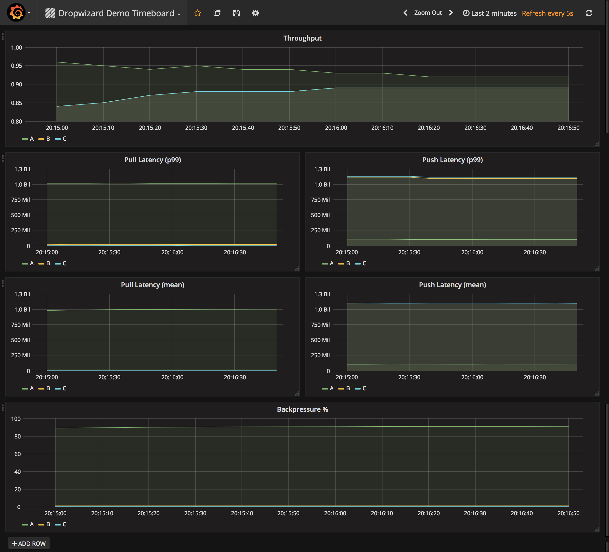

Demo
Start Graphite and Grafana
The demo needs a metrics server and a Grafana dashboard to connect to. The Grafana/Graphite Docker image will give you everything you need. If you don’t have docker, you can install it here.
docker run -d -p 80:80 -p 81:81 -p 8125:8125/udp -p 8126:8126 -p 2003:2003 --name kamon-grafana-dashboard kamon/grafana_graphite
Load dashboards
Once Grafana is up, navigate to localhost:80, login with credentials admin:admin and import the JSON-encoded Grafana dashboard you find in demo/main/resources/grafana.
Demo dashboards are available for both Kamon and Dropwizard. Screenboards display single stats, whilst timeboards are displaying graphs over a specified time interval.
Run it
sbt demo/run
You will have to choose the scenario you’d like to demo. For more details on the different scenarios, check out CheckpointDemo.scala.
Examples of screenboard and timeboard are below.


The source code for this page can be found here.